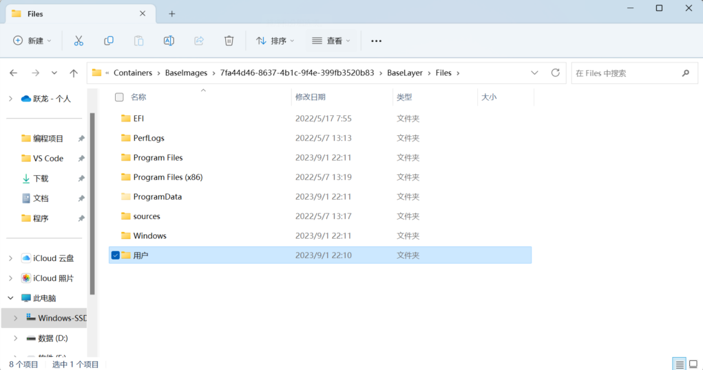
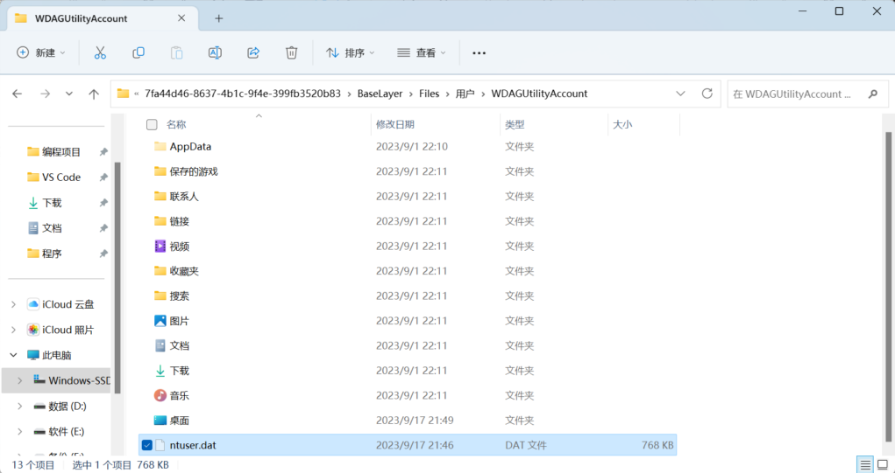
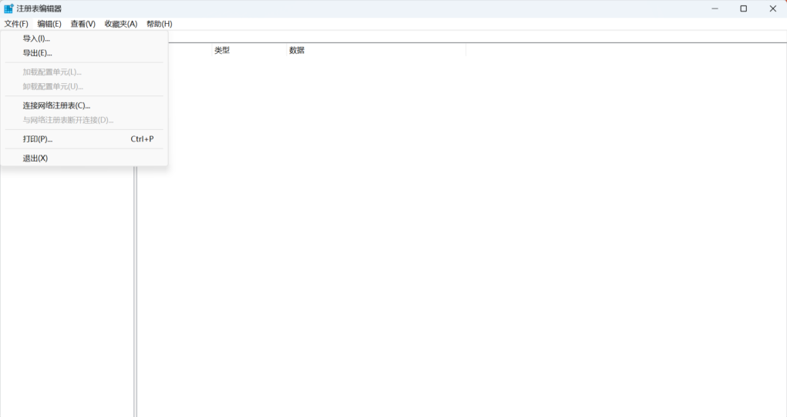

Windows 沙盒更改中文
配置文件：点击下载
原理：更改沙盒默认的注册表值。
找到沙盒文件目录
C:\ProgramData\Microsoft\Windows\Containers\BaseImages\af2d59eb-30fb-414f-9f5a-6aba4eeec179\BaseLayer\Files
这个目录的 uuid 每个人的都不一样。
目录下面不同版本可能不一样，以前的版本目录下是 BaseLayer.vhdx 虚拟磁盘文件，新版本是普通文件夹，如下图
进入用户目录
先复制并额外备份 ntuser.data 文件（这个文件是个隐藏文件，记得在文件资源管理器里打开查看隐藏文件）。
启动沙盒
（其实也可以不启动，可以直接在宿主机上操作，单操作注册表怕搞崩宿主机，在沙盒里操作稳妥点）
拷贝 ntuser.data 文件到沙盒里
打开注册表编辑器并加载 ntuser.data 文件
先选中 HKEY_LOCAL_MACHINE 节点（不选中 Load Hive 选项不可用），然后加载配置文件(Load Hive)，打开 ntuser.data 文件即可。
需要命个名，随便写一个（如 sdx）即可，不影响。
删除 sdx\Control Panel\Desktop\PreferredUILanguagesPending
新增 sdx\Control Panel\Desktop\PreferredUILanguages，值类型为 Multi-String Value(多字符串值)，值为 zh_CN
修改 sdx\Control Panel\International\User Profile\Languages 的值为
1 | zh-Hans-CN |
以下两项地区的不改也不影响显示为中文
修改 sdx\Control Panel\International\Geo\Name 值为 CN
修改 sdx\Control Panel\International\Geo\Nation 值为 45